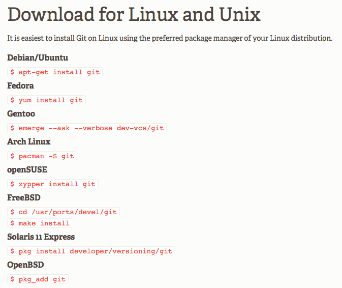

Coding for Humanities
12 October (Class 1): How to Github
Dr Thomas Köntges / @ThomasKoentges
Github Examples
Github Examples
Example Publication
Git
- Version Control System
- Open Source
- Collaborative Editing/Working
- Git vs. Github
Collaborative Editing
- E.g. Google Documents
- Perseids Editing Environment
- Version Control is Important
Version Control
Local Version Control System

Central Version Control System

Distributed Version Control System

How changes are managed
Original files and changes

Snapshots of different Stages

How Git Works
Three Areas

Know Thyself (Git Lifecycle)

Install Github
Get Github Account (Mac/Windows)
Install Git (Linux)
Install Git (Mac/Windows)
Git Config
Setting Email
git config --global user.email "your_email@example.com"
Setting Username
git config --global user.name "Billy Everyteen"
Clone a repository
Clone IntroDH
Create Directory "Classes"
mkdir Classes
cd Classes
Clone the repository
git clone https://github.com/ThomasK81/IntroDH.git
Status
git status
Important Git Commands
Commands
git status
git add filename
git commit
git commit -a -m "comment"
git fetch
git pull
git push
Git Markdown
Markdown
Write a markdown file with your expectations about this course and contribute it to https://github.com/ThomasK81/IntroDH/tree/master/expectations
Questions?